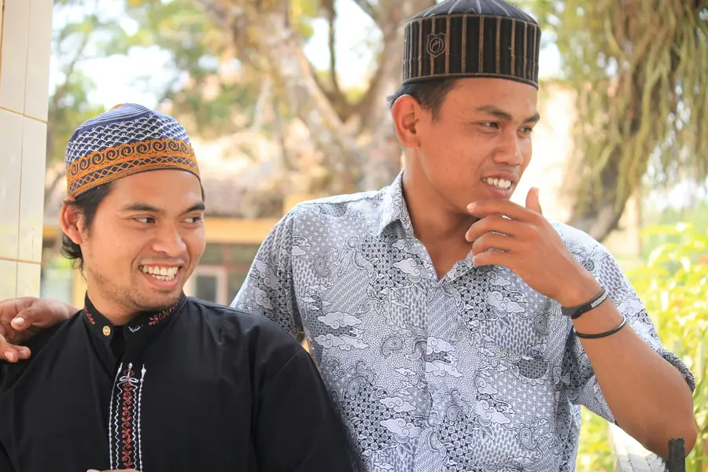
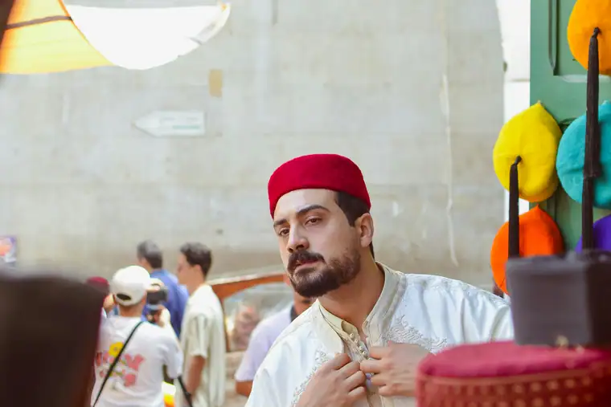
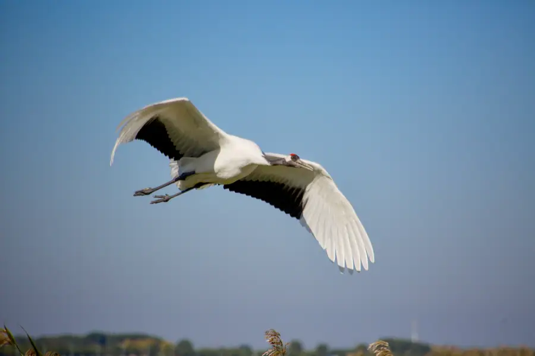

Chat on WhatsApp

Scan the QR code with WhatsApp to add us and start chatting.
Or add us directly: +86-155-2777-1775
Open WhatsAppNew Qiqihar Airport (NDG) to city center, Zhaodong railway pickups, and Heilongjiang car service with licensed professional driver. Fixed price.
Real scenes from Qiqihar — landmarks, streets and everyday life.



A major industrial city on the Songhua River in Western Heilongjiang - known for heavy industry, the historically Russian-influenced city center, nearby Zhalong Nature Reserve wetland, and as the gateway to Inner Mongolia grasslands.
The name "Qiqihar" (齐齐哈尔) comes from the Daur language (a Mongol-related language historically spoken by the Daur people of the area), meaning "post" or "station" - referring to the area historical role as a post station on the Songhua River (松花江) trade route. The Daur and Manchu people have lived in this area for centuries. During the Qing Dynasty, the city served as a military garrison and administrative center for the region.
Qiqihar is one of the few Chinese cities with significant Russian architectural heritage. After the construction of the Chinese Eastern Railway in the late 19th century, Russian engineers and traders came to Qiqihar, building Orthodox churches, European-style commercial buildings, and townhouses. The city center retains this Russian-influenced architectural character alongside its Manchu and Korean cultural influences. The area is also home to Kyrgyz and Mongolian ethnic minorities in the surrounding grasslands.
Qiqihar is served by New Qiqihar Airport (齐齐哈尔三家子机场, NDG), 17 km from the city center with flights to Beijing (2 hours), Shanghai (2.5 hours), Guangzhou, and other cities. The city is a major railway hub on the Harbin-Manzhouli Railway - the main rail link between China and Mongolia/Russia. The Zhaodong Railway Station (ZAL) on the Beijing-Harbin HSR line is 100 km from Qiqihar and often used as a transfer point.
Qiqihar is in Western Heilongjiang Province, on the south bank of the Songhua River where it is joined by the Nemona River. The city lies at the transition between the Sanjiang Plain (三江平原) to the east and the Greater Khingan Mountains (大兴安岭) to the west. To the west and north lie the Inner Mongolia grasslands - about 3 hours drive from Qiqihar city center. The climate is cold temperate with very cold winters (down to minus 30C) and warm summers.
The climate record of Qiqihar decides when the city is at its most comfortable to walk.
The annual average temperature is 4.4 °C; annual rainfall averages 443 mm; July is the hottest month at 23.3 °C; January the coldest at -18.1 °C; The climate pattern includes continental influence, the monsoon, drought.
Monthly means in March, April, May run -4–15 °C. Rainfall over those three months totals about 59 mm.
Monthly means in June, July, August run 21–23 °C. Rainfall over those three months totals about 309 mm.
Monthly means in September, October, November run -6–15 °C. Rainfall over those three months totals about 65 mm.
Monthly means in December, January, February run -18–-13 °C. Rainfall over those three months totals about 10 mm.
From Russian-influenced city architecture to wetlands, grasslands, and volcanic geology - Western Heilongjiang experiences.
Fixed-price private car service for Qiqihar most popular journeys.
~17 km - 30 min - Economy/Business
Your driver meets you at New Qiqihar Airport (NDG) arrival hall and drives you to your Qiqihar hotel. The airport is 17 km from the city center and the drive takes about 30 minutes.
~50 km - 1 hour each way - Full day
Visit Zhalong Nature Reserve to see the red-crowned cranes. Your driver takes you to the reserve entrance and waits while you watch the crane feeding session and explore the wetland boardwalks. Combine with lunch at a local restaurant in the town of Zhalong.
~100 km - 1.5 hours each way - Full day
Visit the Wudalianchi volcanic lakes and hot springs - five lakes formed by volcanic eruptions in the 18th century. The mineral hot springs are known for their health benefits. A full day trip from Qiqihar combining scenic geology with relaxing hot springs.
~100 km - 1.5 hours - Economy/Business
Meet you at Zhaodong Railway Station (ZAL) on the Beijing-Harbin HSR line and drive you to Qiqihar city center. Useful if arriving by high-speed train from Harbin (1 hour) or Beijing (5 hours) when direct Qiqihar rail is less convenient.
Qiqihar is in Heilongjiang, and it is not on our published price list yet — so we quote it for you. Here is exactly how the number is built for your arrival transfer, and what you get for it.
One formula, applied to every city. You get the number in writing before you pay anything — and it is the number that is charged.
Same-day quotes on WhatsApp — we reply between 08:00 and 24:00 Beijing time. The quote is valid for 48 hours, and you can change or cancel free up to 48 hours before pickup.
These are live, published 2026 rates for the cities on our price list. The same formula and the same rules produce your Qiqihar quote — we are simply pricing it for you on request.
| City | 4-seat economy airport transfer | USD |
|---|---|---|
| Guiyang 贵阳市 | ¥164 | ≈ $23.1 |
| Huizhou 惠州市 | ¥229 | ≈ $32.25 |
| Chengdu 成都市 | ¥240 | ≈ $33.8 |
| Shenzhen 深圳市 | ¥273 | ≈ $38.45 |
| Hangzhou 杭州市 | ¥284 | ≈ $40.0 |
| Guangzhou 广州市 | ¥295 | ≈ $41.55 |
| Beijing 北京市 | ¥328 | ≈ $46.2 |
| Shanghai 上海市 | ¥339 | ≈ $47.75 |
Want the full table — every vehicle class, every hour tier, for all 53 published cities? It is one click away, and it is the same sheet our drivers are paid from.
Six things that come with every booking — in Qiqihar and across all 346 cities on the platform.
L-HUB-101603, a registered travel agency. When something goes wrong, there is a company answerable for it — not just a driver at the kerb.
The fare covers driver, fuel, tolls, parking and airport waiting time. Nothing appears on the day that was not on the quote.
Give us the flight number and we follow it. The driver shifts with the delay, and the clock does not start against you.
Your driver knows the airport layout, the traffic patterns and the parking near your destination. That is not something a call centre can fake.
The booking link in your confirmation lets you reschedule or cancel at no cost until 48 hours before pickup.
WhatsApp, 08:00–24:00 Beijing time. Ask for an upgrade, an extra hour or a different city and we will price it on the spot.
Send us your route and date. You get a written fixed price for every vehicle option, with the inclusions spelled out — then book it in one click and change it free up to 48 hours before pickup.
Qiqihar has its own airport and is a major railway hub on the Russia-Mongolia rail corridor.
17 km to city center - 30 minutes by road
NDG is Qiqihar regional airport with daily flights to Beijing (2 hours), Shanghai (2.5 hours), Guangzhou, Shenzhen, and other major cities. The airport is relatively small - your driver meets you directly at the arrival hall exit.
~320 km to Qiqihar - 3.5 hours by road
HRB is a larger airport with more international route options. If NDG does not serve your flight, the drive from Harbin to Qiqihar takes about 3.5 hours via the G10 Suibin-Harbin Expressway. This is also a popular option for travelers combining Harbin and Qiqihar in one trip.
Main hub - conventional & high-speed
Qiqihar main railway station serves both conventional and high-speed trains. Destinations include Harbin (2 hours HSR), Daqing (45 minutes), Mudanjiang (3 hours), and long-distance conventional trains to Beijing (8 hours), Shanghai, and other major cities.
HSR hub - 100 km from Qiqihar
ZAL is on the Beijing-Harbin high-speed corridor and is sometimes more convenient for arrivals from Beijing (5 hours HSR) or departures to Harbin (1 hour). Your driver can meet you here instead of coming into the city if you prefer.
We meet you at the exit with a name board and help with luggage.
Book Station TransferCapture wetlands, Russian architecture, volcanic landscapes, and the Songhua River.
Best at feeding time (morning)
The red-crowned cranes at Zhalong are most photogenic during the morning feeding sessions when they perform their elaborate courtship dance and take flight across the wetland. A long lens (300mm+) is essential. May through October is the best season.
Best in evening light
The former Russian Orthodox Church in Qiqihar center has a distinctive green dome and cream-colored facade in the European style. The building is most photogenic in the evening when the setting sun illuminates the dome against a blue sky. The surrounding European-style street makes good compositional context.
Best at sunrise
The five volcanic lakes of Wudalianchi at sunrise, when mist rises from the water and the crater cones are reflected in the still lake surface, create dramatic landscape photographs. Arrive early morning before the tour groups.
Best in September-October
The linden trees in Longsha Park turn brilliant gold in autumn (September-October), creating a beautiful contrast with the blue Songhua River and traditional Chinese pavilions. The park is less crowded on weekday mornings.
Best at dusk
The European-style facades and street lamps of Khrushchev Street (Zhonghuan Square) take on a distinctive atmosphere in the blue hour after sunset. The mix of Chinese and Russian-influenced shop signs creates colorful compositions.
Best January-February
The Songhua River freezes solid in winter (January-February) and becomes a natural ice skating and activities area. The ice has a beautiful blue-white color and the frost patterns on the surface make interesting close-up photographs.
A specialty of the Qiqihar area - chicken briefly boiled then sliced and served with a dipping sauce of soy sauce, ginger, and scallion oil. The chicken is tender and the cooking method preserves the natural flavor. A must-try at local restaurants in the city market area.
Qiqihar is famous for its smoked and roasted meats - particularly pork hock (熏肘子) and beef (酱牛肉). The smoking process gives the meat a distinctive flavor. Find the best versions at the old city market and specialty shops near the railway station.
The volcanic rock-filtered mineral water from Wudalianchi is naturally carbonated and rich in minerals. It is sold throughout Heilongjiang as a premium drinking water and is also used in local cooking. A unique regional product with a slight mineral taste.
Northern-style fried dough sticks served with soybean milk at morning breakfast spots. The dough is slightly sweeter and more substantial than southern versions. Best at morning markets near Longsha Park.
Wild vegetables foraged from the Greater Khingan Mountains - including ferns, mushrooms, and wild herbs. These are considered delicacies in Heilongjiang cuisine and are served at specialty restaurants. Particularly good in autumn when fresh harvests arrive.
The pedestrianized European-style shopping street is the best place for Russian-influenced goods - Russian chocolate, vodka, crafts, and souvenirs. Also has good quality Chinese Northeast products. Open daily, most active in the afternoon and evening.
The old city market near the Songhua River has fresh produce, local specialty foods, and regional products. A good place to buy smoked and roasted meats to take home. Most active in the morning.
Russian chocolate brands (Alenka, Ritter Sport) and Russian vodka (Stolichnaya, Russian Standard) are widely available at Khrushchev Street shops. Prices are reasonable and these make practical souvenirs. Look for the shops with the best selection.
Bottles of Wudalianchi volcanic mineral water - naturally carbonated with a distinctive mineral taste. Available at supermarkets throughout Heilongjiang. A unique local product that is only produced in this area.
Dried wild mushrooms (松茸,榛蘑) and ferns from the Greater Khingan Mountains. These are considered premium ingredients in Chinese cooking. Available at the old city market and specialty food shops. Lightweight and keep well for travel.
Traditional medicine and wellness traditions of the Songhua River basin and Greater Khingan Mountains.
The Greater Khingan Mountains (大兴安岭) west of Qiqihar are a major source of medicinal herbs in Northeast China. Ginseng (人参, renshen) from the Khingan forests is among the most prized medicinal herbs in TCM - used for vitality and immune support. Wolfberry (枸杞子) from the area is also considered high quality. Cordyceps (冬虫夏草) collected from the mountain grasslands is another premium product.
Available at TCM pharmacies and the old city market.
The Wudalianchi volcanic area (五大连池) is renowned for its mineral waters, which are used for both drinking cures and bathing therapies. The water, filtered through volcanic rock, is naturally carbonated and contains minerals believed to aid digestion, metabolism, and skin conditions. The area has been a health resort since the Qing Dynasty.
The Wudalianchi hot spring resorts attract visitors seeking treatment for chronic conditions.
The extreme cold of the Qiqihar winter has been used therapeutically - cold exposure is believed to stimulate circulation, strengthen the immune system, and improve metabolic function. Some local practitioners offer guided cold-air exposure therapy during the coldest months (December-February). The practice is similar to Finnish sauna-to-snow traditions.
This is practiced informally by local residents rather than in formal clinics.
The Zhalong wetland is recognized for its restorative natural environment - clean air, abundant water, and rich biodiversity create conditions beneficial for respiratory health and stress recovery. The wetland produces large quantities of fresh oxygen and the reed beds filter air pollutants. Traditional medicine recognizes the therapeutic value of wetland environments.
The Zhalong area has historically attracted people seeking rest and recovery.
Insider tips to help you experience Qiqihar like a local.
The red-crowned cranes are most active and photogenic during the morning feeding sessions, typically around 9-10 AM. Arrive at the reserve at opening time (usually 8 AM) and head straight to the viewing platform. Afternoon sessions are less reliable. May through October is the best season.
The best white-boil chicken (白斩鸡) in Qiqihar is at the small restaurants inside or near the old city market. Go at lunchtime when the market is busy and the chicken is freshest. A simple but excellent meal costs very little.
The European-style buildings on Khrushchev Street are most atmospheric in the blue hour after sunset when the street lamps come on and the sky has a deep blue color. The Russian-influenced architecture looks most European at this time. Good for photography and evening strolls.
The Wudalianchi hot springs are least crowded early in the morning. The outdoor pools in the volcanic area are particularly atmospheric at dawn when mist rises from the hot water and the morning light illuminates the volcanic cones. A relaxing start before the day-trippers arrive.
The best Russian chocolate (Alenka is the most popular), vodka, and crafts in Qiqihar are at the shops on Khrushchev Street. Prices are negotiable - especially for multiple items. The shops near the center of the pedestrian street have the best selection.
The Songhua River freezes solid in January and February and becomes a public ice skating area in the city center. Locals skate, sledge, and play ice hockey. Renting skates is cheap and the experience of skating on a frozen river with the city skyline in the background is unique.
Fixed price, licensed professional driver, free flight tracking. From New Qiqihar Airport (NDG) to your Qiqihar hotel, Zhalong wetland tour, or Wudalianchi hot springs.
Get Instant QuoteQuestions? WhatsApp +86-155-2777-1775
Compare routes, published prices and local driver tips across the cities we cover.
Scan the QR code with WhatsApp to add us and start chatting.
Or add us directly: +86-155-2777-1775
Open WhatsApp